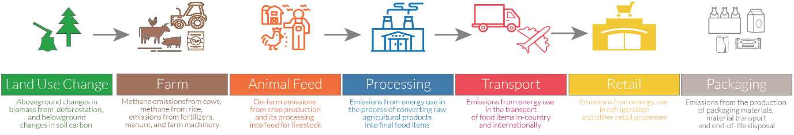

Voici FoodPrints, un outil de visualisation qui permet de mieux appréhender l'empreinte environnementale nos choix alimentaires
Aujourd’hui
75% de Français déclarent consommer des tomates en hiver.
Or une tomate produite hors saison présente une empreinte carbone bien plus élevée puisqu'elle génère
4 fois plus d’émissions de CO2e que la même tomate produite durant la bonne saison.
Or une tomate produite hors saison présente une empreinte carbone bien plus élevée puisqu'elle génère
4 fois plus d’émissions de CO2e que la même tomate produite durant la bonne saison.
Supply Chain
"Manger local" est une recommandation que l'on entend souvent, même de la part de sources éminentes, dont les Nations unies.Bien que cela puisse sembler logique - après tout, le transport entraîne des émissions - c'est l'un des conseils les plus erronés. 